1. Objetivo
Este manual explica cómo usar PuenteGemelo para registrar un puente a partir de su nube de puntos, obtener su modelo estructural y sus modos de vibración, entrenar la inteligencia artificial que orienta la inspección y llevar la ficha de inspección del puente según la guía del MTC. Está dirigido a los inspectores y a los ingenieros que usan la aplicación, no a quienes la programan.
2. Alcance
El manual cubre la versión 2.20.2 de la aplicación, tanto en su versión web como en el programa de escritorio para Windows, macOS y Linux, que tienen las mismas funciones. Describe los cinco módulos del menú principal (Inicio, Gemelo digital, Monitoreo con IA, Inspección y gestión y Verificación) y la conexión con Ansys Mechanical APDL. Los ejemplos y las figuras usan la nube de puntos del Puente Balta.
No forma parte de este manual la teoría de los métodos que usa la aplicación (detección de apoyos, modelo de barras, análisis modal, entrenamiento de la IA); esa parte se desarrolla en la tesis.
3. Documentos a consultar
- Ministerio de Transportes y Comunicaciones. Guía para Inspección de Puentes (Directiva N.° 01-2006-MTC/14).
- Ministerio de Transportes y Comunicaciones. Manual de Puentes (camión de diseño HL-93).
- Ñuñuvero Castillo, L. A. y Tarazona Cerna, A. B. (2026). Implementación de una plataforma digital para la inspección de puentes históricos con inteligencia artificial: caso Puente Balta. Tesis, UPC.
- Documentación de CloudCompare, para convertir nubes E57 o LAZ a PLY.
- Documentación de Ansys Mechanical APDL, para correr el macro exportado por la aplicación.
4. Desarrollo
4.1 Sobre el sistema
4.1.1 Descripción
PuenteGemelo es una plataforma que reúne, para cada puente, su ficha de inspección, un modelo estructural obtenido de la nube de puntos (gemelo digital) y una inteligencia artificial entrenada con ese modelo. La aplicación compara la vibración medida en campo con la del modelo y la IA indica en qué zona conviene revisar primero. La decisión sobre el estado del puente es siempre del inspector.
Todos los cálculos se hacen en la computadora del usuario. La nube de puntos y los datos del puente no se envían a ningún servidor.
4.1.2 Características
- Lee nubes de puntos en formato PLY, LAS, XYZ, TXT o CSV.
- Detecta el tablero, los pilares y los estribos, mide las dimensiones principales y separa los elementos del puente, que se pueden descargar como modelo IFC.
- Informa qué parte de cada elemento quedó registrada en la nube y completa los huecos con la geometría del mismo puente, marcando siempre lo generado.
- Arma un modelo de barras y calcula sus modos de vibración. El modelo se puede exportar a Ansys y comparar con sus resultados.
- Entrena una IA (bosque aleatorio) que señala la zona probablemente dañada a partir de las frecuencias y formas modales.
- Lleva la ficha de inspección del MTC, el inventario, los defectos y el panel fotográfico, y genera el informe imprimible.
4.1.3 Requisitos mínimos
| Elemento | Requisito |
|---|---|
| Versión web | Navegador actualizado (Chrome, Edge o Firefox) con conexión a internet para abrir la página y para la vista 3D. |
| Programa de escritorio | Windows, macOS o Linux. Funciona sin internet una vez instalado. |
| Nube de puntos | Coordenadas x, y, z en las tres primeras columnas, en metros, centímetros o milímetros. En las pruebas se usaron nubes de hasta 1,2 millones de puntos. |
| Medición de vibración (opcional) | Archivo CSV de acelerómetros o de un celular con la aplicación phyphox. |
| Ansys (opcional) | Ansys Mechanical APDL. La versión Student admite hasta 128 000 nodos y elementos, suficiente para los modelos que exporta la aplicación. |
4.1.4 Principales funcionalidades
| Módulo | Funcionalidad |
|---|---|
| Inicio | Lista de puentes, puente activo, importación y exportación de proyectos (.puente), estado del puente y alertas. |
| Gemelo digital | Registro del puente en siete pasos: nube de puntos, tablero y apoyos, geometría, datos del puente y modos, entrenamiento de la IA, prueba de la IA, prioridades e informe. Incluye el registro sísmico. |
| Monitoreo con IA | Carga de la medición de vibración, identificación de frecuencias, comparación con el modelo y diagnóstico con la IA. |
| Inspección y gestión | Ficha de inspección del MTC, carga vehicular HL-93 y proyección del deterioro con el plan de mantenimiento. |
| Verificación | Comparación del modelo con OpenSees, pruebas de la IA en varios tipos de puente y procedencia de los datos. |
4.1.5 Mapa de navegación
El menú principal tiene cinco pestañas. Cada una abre un submenú con sus herramientas (Figura 1).
(pasos 1 a 7)Sismo registrado
Figura 1. Mapa de navegación de PuenteGemelo.
Con el Puente Balta de ejemplo activo, la pestaña Gemelo digital muestra además el material de la primera parte de la tesis (modelo 3D y nube, simulación e IA, comparación de escenarios y dinámica) y la pestaña Inspección y gestión agrega las prioridades de inspección de ese modelo.
4.1.6 Partes de la pantalla
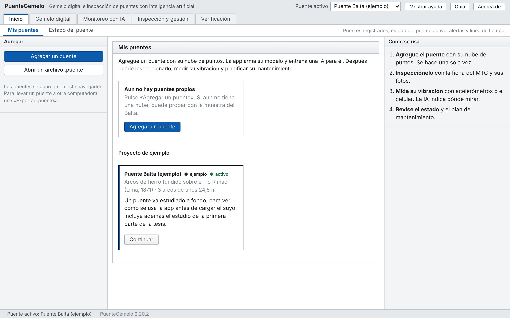
1234 5678| N.° | Parte | Uso |
|---|---|---|
| 1 | Menú principal | Cambia de módulo. |
| 2 | Submenú | Herramientas del módulo elegido. A la derecha se muestra una descripción corta del módulo. |
| 3 | Puente activo | Indica con qué puente se está trabajando. Todo lo que se haga se guarda en ese puente. Desde la lista también se agrega un puente nuevo. |
| 4 | Mostrar ayuda, Guía, Acerca de | «Mostrar ayuda» muestra un texto explicativo en cada pantalla; «Guía» abre este manual. |
| 5 | Panel izquierdo | Acciones o pasos de la herramienta abierta. En el registro de un puente muestra los siete pasos y cuáles están listos. |
| 6 | Área de trabajo | Contenido de la herramienta: tablas, gráficos, formularios. |
| 7 | Panel derecho | Indicaciones cortas sobre lo que se ve en el área de trabajo. |
| 8 | Barra de estado | Puente activo y versión de la aplicación. |
4.2 Funcionalidades
Las funcionalidades se describen por módulo, en el orden del menú. Cada una indica dónde se encuentra, para qué sirve y el procedimiento a seguir.
4.2.1 Inicio
a) Mis puentes
| Ubicación | Inicio → Mis puentes |
| Descripción | Lista los puentes guardados en la computadora o en el navegador y el puente de ejemplo (Balta). Permite agregar un puente, abrir un archivo .puente y exportar un puente para llevarlo a otra computadora. |
Procedimiento para llevar un puente a otra computadora:
- En Mis puentes, ubique el puente y pulse «Exportar .puente». Se descarga un archivo con todo el proyecto.
- En la otra computadora, abra Inicio → Mis puentes y pulse «Abrir un archivo .puente».
- Elija el archivo. El puente aparece en la lista y queda como puente activo.
Nota: los puentes quedan guardados solo en la computadora o el navegador donde se trabajó. Se recomienda exportar el archivo .puente cada cierto tiempo como respaldo.
b) Estado del puente
| Ubicación | Inicio → Estado del puente |
| Descripción | Resume el puente activo: lista de tareas con el siguiente paso («Hacer ahora»), indicadores (índice de salud, calificación MTC, último diagnóstico de la IA, carga vehicular, vida útil estimada y próxima inspección), alertas e historia del puente con cada inspección, medición y diagnóstico. |
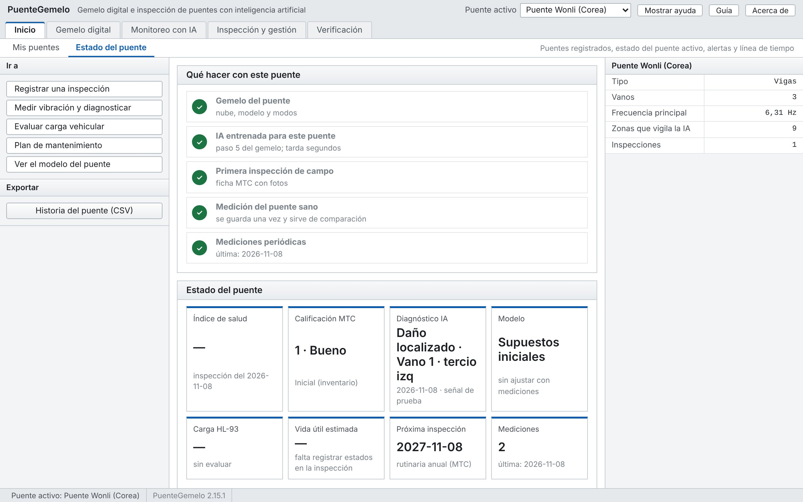
4.2.2 Gemelo digital: registro de un puente
| Ubicación | Inicio → Mis puentes → «Agregar un puente», o Gemelo digital → Nube, modelo e IA |
| Descripción | Registra el puente a partir de su nube de puntos en siete pasos, que aparecen en el panel izquierdo. Cada paso se habilita cuando el anterior está listo. El registro se hace una sola vez por puente. |
Antes de cargar la nube
Lo que la aplicación puede medir depende de cómo se hizo el escaneo. A partir de las pruebas con la nube del Balta y de otros puentes se recomienda:
- Escanear desde las dos márgenes. Con una sola margen falta una cara de cada pilar y de cada arco, y el espesor del pilar no se puede medir.
- Colocar al menos una estación bajo cada vano. Es la zona que más se pierde: en el Balta, bajo el tramo 2 solo el 68 % del largo tiene puntos.
- Seguir el tablero 10 a 15 m más allá de cada estribo y escanear el estribo de frente. En la nube del Balta el estribo de la margen izquierda no aparece.
- Usar una separación entre puntos de unos 5 cm sobre la estructura. Con 15 cm o más se siguen detectando los apoyos, pero el canto y el espesor pierden precisión y las barandas y péndolas delgadas desaparecen.
- Revisar el registro entre estaciones. Un error de registro aparece luego como un escalón en el mapa de desviaciones y como caras dobles en los pilares.
- Recortar calles, edificios y el cauce antes de cargar la nube, o hacerlo en el paso 1.
Paso 1. Nube de puntos
- Pulse «Elegir archivo» o arrastre el archivo al recuadro. Si la nube está en E57 o LAZ, conviértala antes a PLY con CloudCompare.
- Indique el eje vertical (Z o Y hacia arriba) y las unidades del archivo.
- Escriba el nombre del puente.
- Revise la elevación y la planta. Si la nube incluye accesos o calles, haga clic en la planta en un extremo del tramo y luego en el otro, ajuste el ancho y pulse «Recortar». «Volver a la nube completa» deshace el recorte.
- Pulse «Continuar».
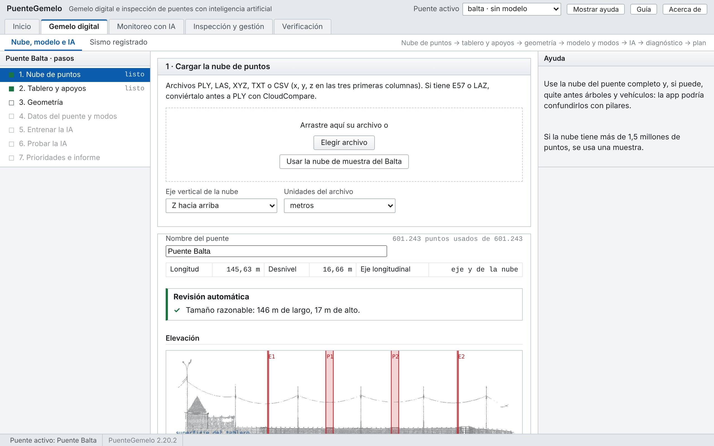
Paso 2. Tablero y apoyos
- Revise en la elevación las líneas rojas, que son los apoyos detectados (E = estribo, P = pilar), y compárelas con el puente real.
- En la tabla de apoyos, verifique que cada pilar tenga su fila. Los apoyos dudosos llevan el aviso «Confirme». Para agregar un apoyo, haga clic en la elevación; para quitar uno, pulse «Quitar».
- Si el tablero o el terreno no coinciden con la nube, corrija las cotas y pulse «Detectar apoyos otra vez».
- Pulse «Identificar elementos» y, si lo necesita, «Generar nube completada» (ver la Tabla 1).
- Pulse «Continuar».
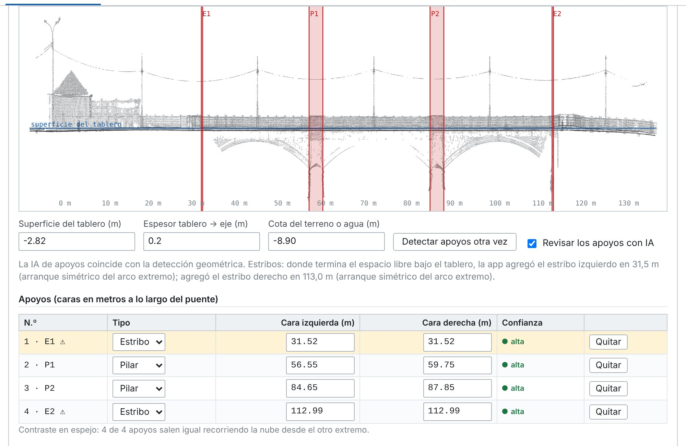
La columna «Confianza» indica si el apoyo vuelve a aparecer cuando la nube se recorre desde el otro extremo (alta) o solo en un sentido (media). Un pilar «inferido» no tiene fuste en la nube; la aplicación lo coloca donde arrancan dos arcos seguidos.
Debajo de los apoyos, el paso 2 muestra lo que se puede medir en la nube, ordenado en cinco secciones:
| Sección | Contenido |
|---|---|
| 2.1 Calidad de la nube | Cobertura de la calzada y de la parte inferior, separación entre puntos, extremos cortados y recomendaciones para la siguiente captura. Si la nube trae intensidad o color, separa la vegetación y busca zonas anómalas. |
| 2.2 Medidas y elementos | Ancho y canto del tablero, espesor y ancho de los pilares. «Identificar elementos» separa tableros, pilares, estribos, arcos, montantes, péndolas, tirantes y barandas con sus medidas. «Descargar modelo IFC» genera el modelo para Revit, Tekla, BlenderBIM u otro visor IFC. |
| 2.3 Completitud y nube completada por elemento | Porcentaje visto de cada cara de cada elemento, caras con menos del 60 % y desde dónde volver a escanear. «Generar nube completada» rellena los huecos con la geometría del mismo puente; «Completado por elemento» muestra el resultado de cada cara en un mapa de celdas. |
| 2.4 Forma y cambios en el tiempo | Desviaciones de la calzada, arcos, pilares y barandas respecto de su forma ideal (hundimientos, abultamientos, pérdida de sección) y comparación con una nube de otra fecha. |
| 2.5 Evidencia para la inspección | Lo que la nube muestra de cada elemento. «Llevar al expediente de inspección (MTC)» pasa esta evidencia a la ficha de inspección. |
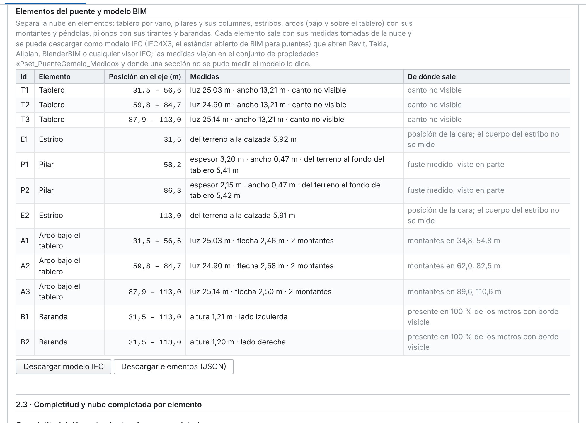

Antes de completar la nube, la aplicación oculta parches de la propia nube, los completa con cada regla y mide cuántos puntos acertó. Una regla solo se aplica en ese puente si se pudo probar con al menos 50 puntos y acertó al menos el 80 %. En la nube del Balta pasaron dos reglas: la sección transversal repetida del tablero (99 %) y la simetría de los pilares (88 %). Cada punto generado lleva su origen y no se usa para medir daños.
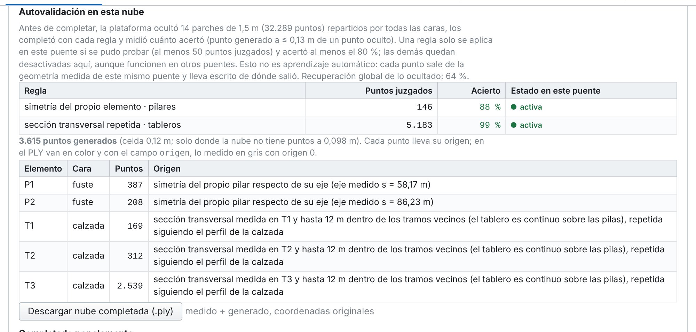
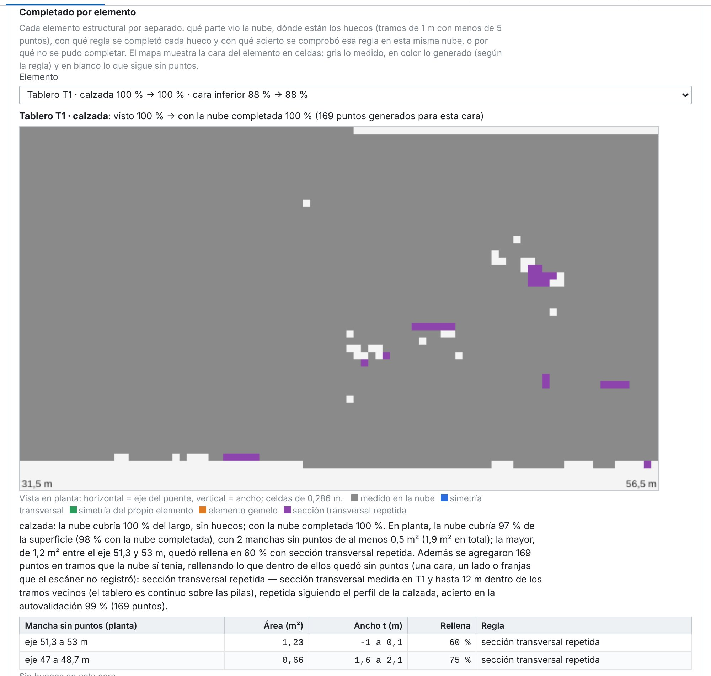
Nota: lo marcado como «inferido» no sale de puntos de la nube, sino de la geometría del propio puente (por ejemplo, la otra cara de un pilar con su espesor medido o la parábola del arco en el tramo no visto). Lo que no se puede deducir, como un estribo ausente, se declara «no completable» y no se rellena.

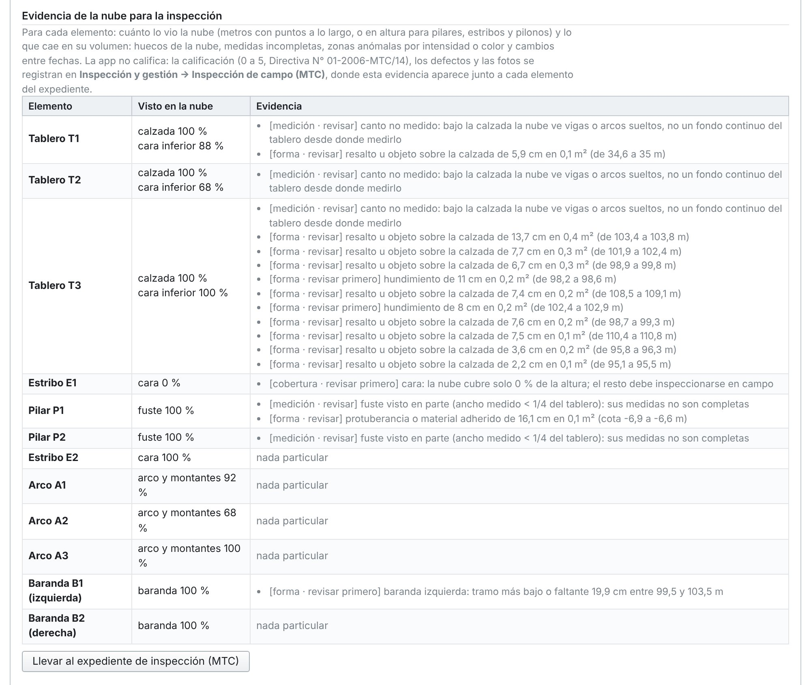
Paso 3. Geometría
- Elija el tipo de puente. La aplicación propone uno según la nube (arcos, vigas o armadura).
- Pulse «Calcular geometría». Para arcos, la tabla muestra la luz, la flecha y qué parte del intradós se vio.
- Pulse «Continuar».
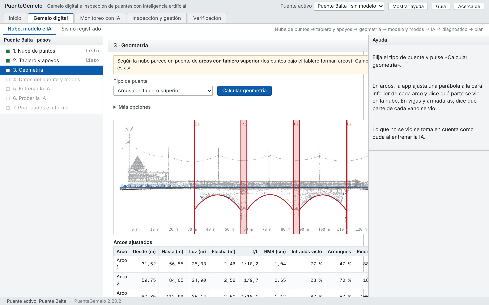
Nota: si el ajuste de arcos falla, casi siempre el puente es de vigas.
Paso 4. Datos del puente y modos
- Elija el material y escriba los datos que la nube no muestra: secciones, peso del tablero y propiedades de los pilares. Las etiquetas amarillas marcan los valores que todavía no se revisaron.
- Pulse «Calcular modos». La tabla muestra la frecuencia, el periodo y la dirección de cada modo.
- Pulse «Ver nube y modelo en 3D» para revisar el modelo sobre la nube.
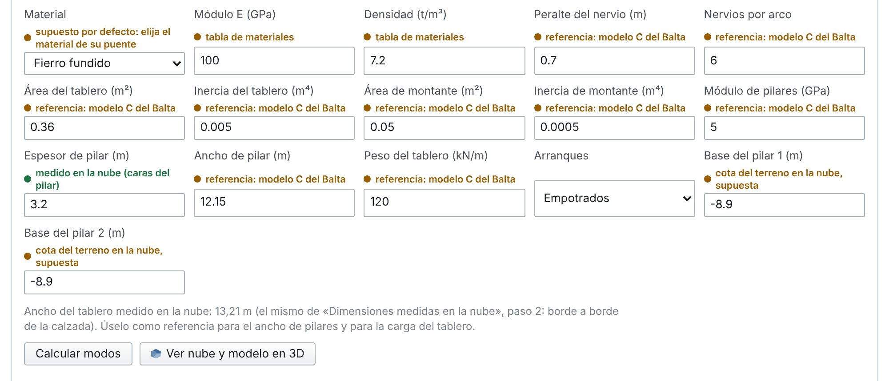

Verificación del modelo con Ansys
| Ubicación | Gemelo digital → paso 4, debajo de la tabla de modos |
| Descripción | Exporta el mismo modelo a un macro de Ansys Mechanical APDL (BEAM188, masas en los nodos, mismos apoyos) y compara los resultados de Ansys con los de la aplicación, modo por modo. |
- Pulse «Exportar a Ansys (.mac)». Marque «con deformación por cortante» solo si quiere incluir ese efecto; sin marcarlo, Ansys debe dar las mismas frecuencias.
- En Mechanical APDL, use File → Read Input from y elija el macro. Al terminar quedan los archivos frecuencias_…txt y modos_…txt en la carpeta de trabajo.
- En la aplicación, pulse «Cargar resultados de Ansys» y elija los dos archivos.
- Revise la tabla. Un modo concuerda si la diferencia de frecuencia es de 1 % o menos y el MAC (parecido de la forma modal) es de 0,95 o más.

Nota: si los archivos cargados son de otro macro (otro puente, otros apoyos o datos cambiados después de exportar), la aplicación lo indica en rojo y no toma la comparación como verificación. En ese caso, exporte el macro otra vez y vuelva a correrlo.
Paso 5. Entrenar la IA
- Pulse «Entrenar la IA». La aplicación simula unas 1300 combinaciones de daño en las zonas del puente; con el Balta tardó 32 segundos.
- Lea el resumen: porcentaje de daños detectados, zona correcta, vano correcto y falsas alarmas.

Importante: estos porcentajes se calculan con daños simulados. Con un puente real el acierto será menor, por eso la IA se usa para decidir dónde mirar primero y no para reemplazar la inspección.
Pasos 6 y 7. Probar la IA, prioridades e informe
En el paso 6 se elige una zona y un porcentaje de daño; la aplicación simula una medición con error y la IA, sin conocer la respuesta, indica la zona que cree dañada. «Repetir 100 mediciones» muestra con qué frecuencia acierta.
El paso 7 ordena las zonas para la inspección de campo según tres criterios: cuánto afecta su daño a la vibración, cuánto de la zona no se vio en la nube y qué tan difícil le resulta a la IA. Debajo está el informe completo del registro, que se puede copiar o descargar.
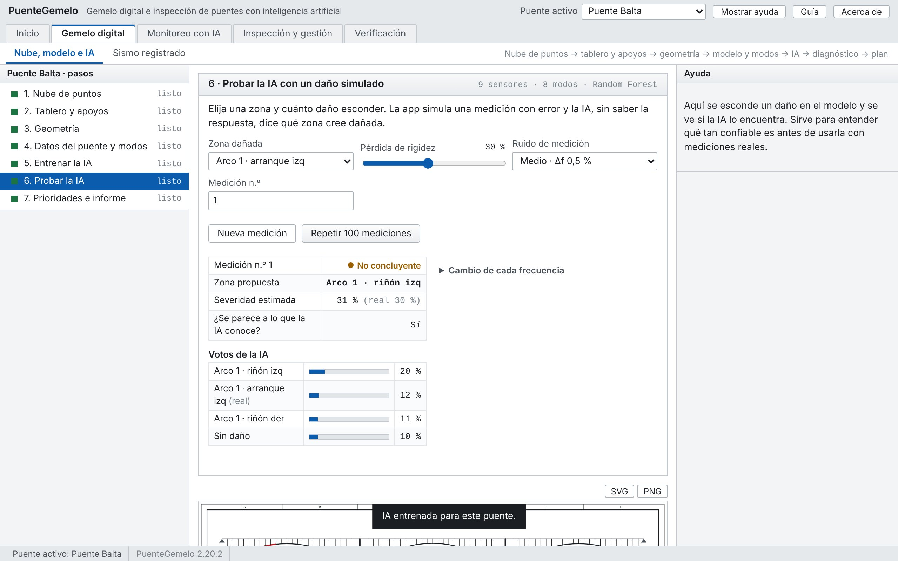
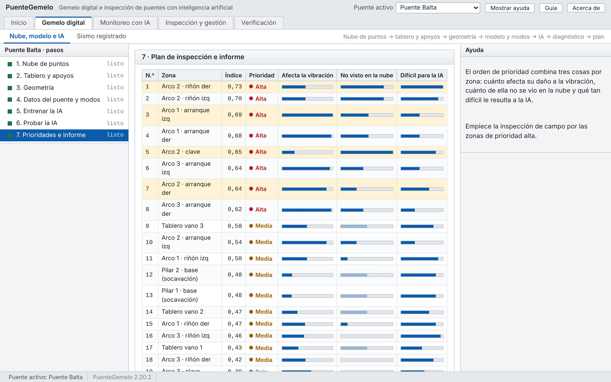
Sismo registrado
| Ubicación | Gemelo digital → Sismo registrado |
| Descripción | Aplica un registro sísmico del CISMID o del IGP al modelo del puente y muestra su respuesta. |
4.2.3 Monitoreo con IA
| Ubicación | Monitoreo con IA → Vibración medida e IA |
| Descripción | Obtiene las frecuencias del puente a partir de una medición de vibración, las compara con el modelo o con una medición del puente sano y aplica la IA. |
Procedimiento en campo:
- Coloque el acelerómetro o el celular (phyphox, medición «Aceleración (sin g)») sobre el tablero, firme y horizontal, en los puntos S1 a S9 que indica la aplicación (cuartos y centro de cada vano). Con un sensor se obtienen frecuencias; con tres o más, también la forma de vibrar.
- Grabe entre 10 y 20 minutos con el tránsito normal, sin caminar cerca del sensor.
- Anote la fecha, la hora y la temperatura del aire, y exporte el archivo como CSV.
Procedimiento en la aplicación:
- Cargue la medición e indique en qué punto estuvo cada sensor.
- Pulse «Analizar la medición».
- La primera vez, si el puente está sano, pulse «Guardar como medición del puente sano». Las mediciones siguientes se comparan con esa.
- Pulse «Diagnosticar con IA» e interprete el resultado con la Tabla 2.

| Resultado | Qué hacer |
|---|---|
| Sin daño detectado | La vibración se parece a la del puente sano. Continuar con la inspección rutinaria. |
| Daño localizado | Inspeccionar primero la zona señalada, con más detalle. |
| No concluyente | Tomar las zonas más votadas como orientación y repetir la medición. |
| Medición distinta a lo esperado / Cambio no explicado | Revisar sensores, puntos y duración. Si la medición está bien, programar una inspección especial. |
Nota: la temperatura cambia las frecuencias casi tanto como un daño. Mida a horas y temperaturas parecidas y registre siempre la temperatura. Si no tiene una medición, «Probar con una señal simulada» genera una para practicar.
4.2.4 Inspección y gestión
a) Inspección de campo (MTC)
| Ubicación | Inspección y gestión → Inspección de campo (MTC) |
| Descripción | Ficha de inspección según la Directiva N.° 01-2006-MTC/14, con inventario, calificación por elemento, defectos, panel fotográfico e informe imprimible. |
- Pulse «Nueva» y registre la fecha, el tipo de inspección y los inspectores.
- Califique cada elemento de 0 (muy bueno) a 5 (pésimo). La escala del MTC se muestra en el panel derecho.
- Si es posible, registre qué cantidad de cada elemento está en estado Bueno, Regular, Malo o Severo (por ejemplo, 12 m de viga en estado Regular). Con estos datos se calcula la salud del puente y el plan de mantenimiento.
- Registre cada defecto con «+ Defecto» (fisuras, corrosión, socavación u otros), con su ubicación, extensión y medidas.
- Agregue las fotos en el panel fotográfico.
- Pulse «Informe imprimible» para obtener el informe y guardarlo en PDF.
La primera vez se llena también el Inventario (Anexo 03-01). Si antes se llevó la evidencia de la nube (paso 2, sección 2.5), la longitud, los tramos, las luces y algunas cantidades ya aparecen llenas, y arriba de la ficha se muestra el recuadro «Evidencia de la nube».

b) Carga vehicular HL-93
| Ubicación | Inspección y gestión → Carga vehicular HL-93 |
| Descripción | Calcula los esfuerzos y la flecha con el camión de diseño del Manual de Puentes. Para saber si el puente resiste se deben ingresar las resistencias del material. |
c) Deterioro y mantenimiento
| Ubicación | Inspección y gestión → Deterioro y mantenimiento |
| Descripción | Con las cantidades por estado de la inspección, proyecta la salud del puente en el tiempo y propone un plan de mantenimiento según el presupuesto. |
4.2.5 Verificación
| Ubicación | Verificación → Validación; Verificación → Datos y procedencia |
| Descripción | Muestra la concordancia del modelo de la aplicación con OpenSees, las pruebas de la IA con distintos tipos de puente y el origen de cada dato usado. |
4.3 Glosario de términos
| Término | Definición |
|---|---|
| Nube de puntos | Conjunto de puntos con coordenadas x, y, z obtenido con escáner láser o dron. |
| Gemelo digital | Modelo del puente construido con su nube de puntos, que se actualiza con las inspecciones y mediciones. |
| Completitud | Porcentaje de una cara de un elemento que tiene puntos en la nube. |
| Nube completada | Nube original más los puntos generados con la geometría del mismo puente; cada punto generado lleva su regla de origen. |
| Autovalidación | Prueba que hace la aplicación en la misma nube: oculta parches, los completa y mide el acierto de cada regla. |
| Inferido | Elemento o parte que no está en la nube pero que se deduce de la geometría del puente. |
| IFC | Industry Foundation Classes, formato abierto de modelos BIM. |
| Modo de vibración | Forma en que vibra el puente a una frecuencia propia. |
| MAC | Modal Assurance Criterion. Indica cuánto se parecen dos formas modales (1 = iguales). |
| Macro (.mac) | Archivo de comandos que Ansys Mechanical APDL ejecuta para crear y resolver el modelo. |
| Falsa alarma | Caso en que la IA indica daño en un puente sin daño. |
| Archivo .puente | Archivo con todo el proyecto de un puente, para respaldo o para llevarlo a otra computadora. |
4.4 Preguntas frecuentes
¿Se necesita internet?
El programa de escritorio funciona sin internet. La versión web necesita internet para abrirse y para la vista 3D. En los dos casos los cálculos se hacen en la computadora del usuario.
¿Funciona con cualquier puente?
La aplicación reconoce y mide puentes de vigas, losas y cajones, arcos con el tablero encima o debajo, armaduras, atirantados y combinaciones de estos. El modelo de vibración y la IA se arman para arcos con el tablero encima, vigas y armaduras; en atirantados y arcos con el tablero colgado representan solo el tablero sobre sus apoyos. No están soportados los puentes colgantes, extradosados, móviles ni las bóvedas de piedra rellenas.
¿Qué pasa si los datos del paso 4 no son exactos?
El modelo vibrará distinto del puente real y esa diferencia puede parecer daño. Por eso conviene guardar una medición del puente sano y comparar contra ella, o ajustar el modelo con «Ajustar el modelo a esta medición».
¿Es necesario Ansys?
No. La aplicación calcula los modos por su cuenta. Ansys solo sirve para comprobar ese cálculo con un programa comercial. Que el modelo represente al puente real depende de los datos del paso 4 y de una medición de vibración.
¿Se puede usar la nube completada para medir daños?
No. Sirve para ver la forma completa, para el modelo y para planificar la siguiente captura. Los daños se miden solo sobre los puntos medidos.
¿Por qué un pilar aparece como «inferido»?
Porque su fuste no está en la nube, pero dos arcos seguidos arrancan en ese lugar. Debe confirmarse en campo. En un puente de vigas esta deducción no es posible.
¿Cómo se revisa el archivo PLY de la nube completada?
Ábralo en CloudCompare y coloree por el campo origen: 0 es lo medido y cada número siguiente es una regla distinta, que se lista en el encabezado del archivo.
4.5 Problemas frecuentes
| Problema | Solución |
|---|---|
| El archivo E57 o LAZ no se puede cargar. | Convertir la nube a PLY con CloudCompare y cargarla de nuevo. |
| El puente aparece del tamaño equivocado o de costado. | En el paso 1, revisar las unidades del archivo y el eje vertical. |
| Falta un pilar o aparece un árbol como pilar. | En el paso 2, hacer clic en la elevación para agregar el apoyo o pulsar «Quitar». Si la nube tiene color o intensidad, usar «Quitar vegetación y volver a detectar». |
| La nube trae calles o tramos curvos. | Recortar en el paso 1. Para puentes curvos en planta, activar «Seguir su eje» en el paso 2 (opción experimental). |
| Ansys se cierra al abrir con un error de memoria. | En el Mechanical APDL Product Launcher, bajar la memoria reservada (por ejemplo, 1024 MB de espacio de trabajo y 256 MB de base de datos) y volver a abrir. |
| La comparación con Ansys sale en rojo: «Estos resultados no son de este modelo». | Los archivos son de otro macro. Exportar el macro desde el modelo actual, correrlo y cargar los archivos nuevos. |
| Al descargar aparece «La descarga no está disponible en esta vista». | Abrir la aplicación desde la versión publicada en GitHub Pages o desde el programa de escritorio. |
| La vista 3D no carga en la versión web. | Comprobar la conexión a internet o usar el programa de escritorio. |
5. Control de cambios
| Ítem | Versión | Fecha | Descripción del cambio | Responsable |
|---|---|---|---|---|
| 1 | 2.15.0 | 08/11/2026 | Ficha de inspección por elemento según la Directiva N.° 01-2006-MTC/14. | Ñuñuvero, Tarazona |
| 2 | 2.16.0 | 09/11/2026 | Desviaciones de la forma ideal. | Ñuñuvero, Tarazona |
| 3 | 2.17.1 | 12/11/2026 | Completitud, nube completada y autovalidación. Primera versión de la guía. | Ñuñuvero, Tarazona |
| 4 | 2.18.0 | 19/11/2026 | Exportación del modelo a Ansys Mechanical APDL. | Ñuñuvero, Tarazona |
| 5 | 2.19.0 | 20/11/2026 | Completado de la nube por elemento y paso 2 ordenado en secciones. | Ñuñuvero, Tarazona |
| 6 | 2.20.0 | 20/11/2026 | Carga de resultados de Ansys y comparación por MAC. | Ñuñuvero, Tarazona |
| 7 | 2.20.2 | 26/11/2026 | Revisión final de la aplicación. Manual de usuario reestructurado con el formato de manual de usuario. | Ñuñuvero, Tarazona |